Home
Screenshots
Genomics Lab Website, 2013
Django/MySQL website including members-only interfaces
to navigate and query the lab's databases
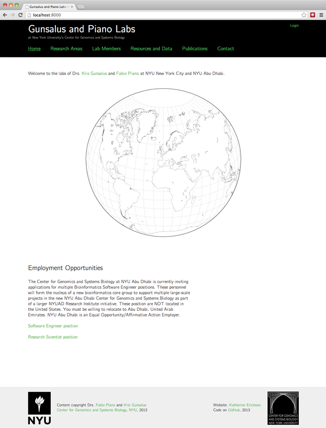
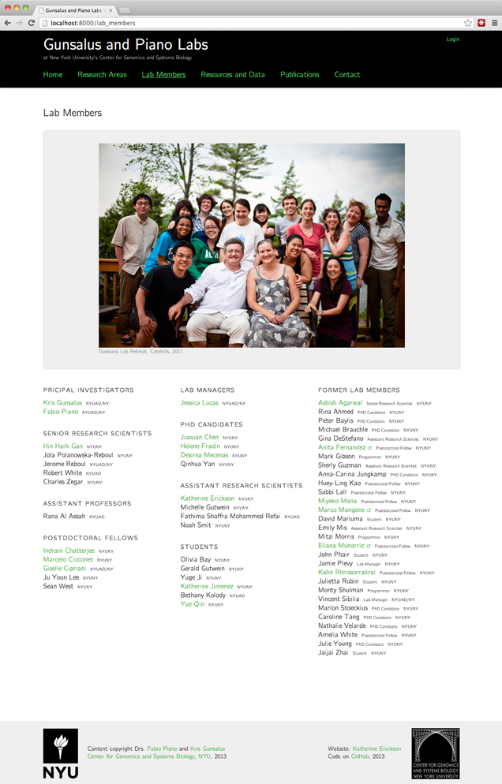
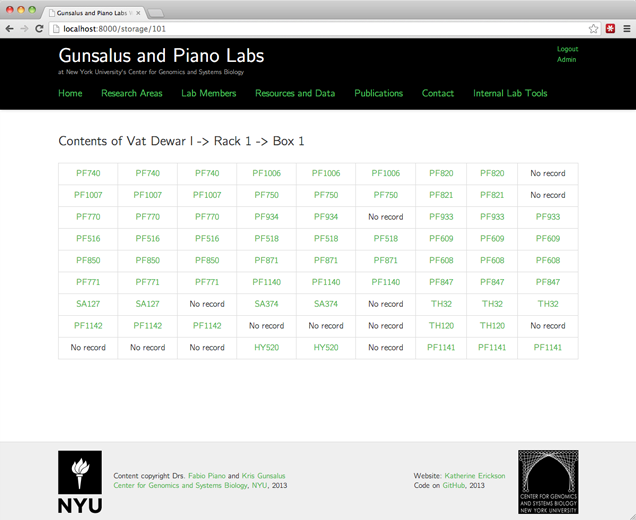
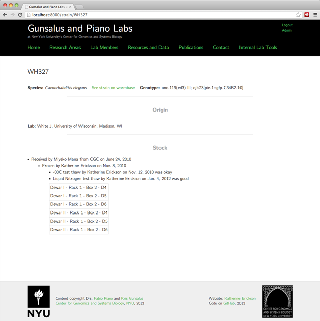
Early Embryo Localizome, 2013
Django/MySQL website exploring videos and results from
a large-scale protein localization study
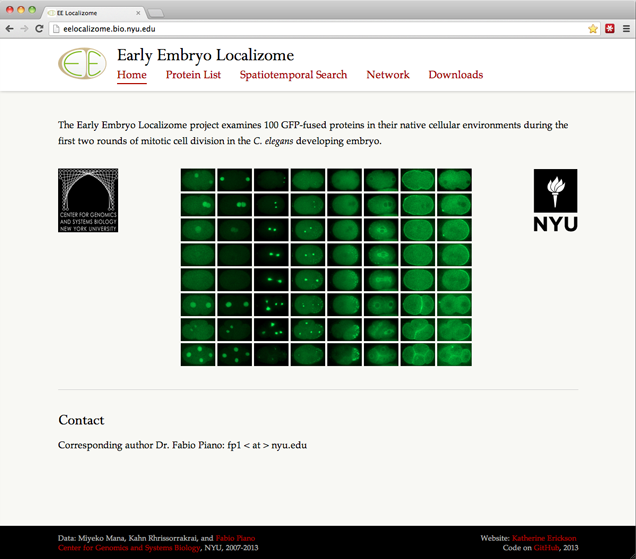
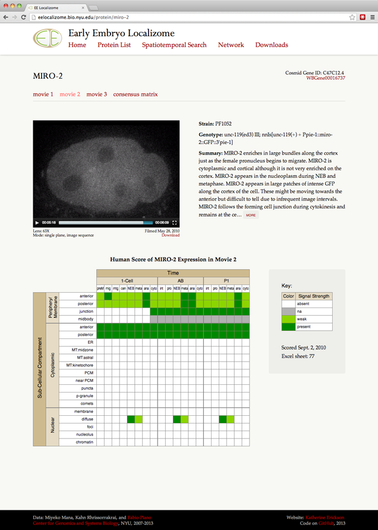
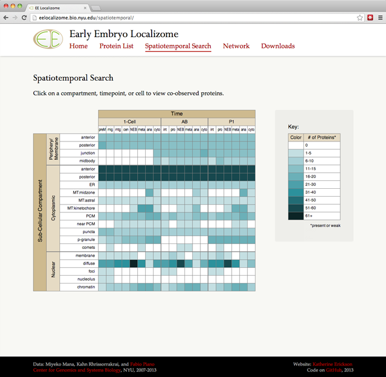
Conservation Big Year, 2013
Custom Wordpress theme and pages for a birder's yearlong
project to see birds of conservation concern
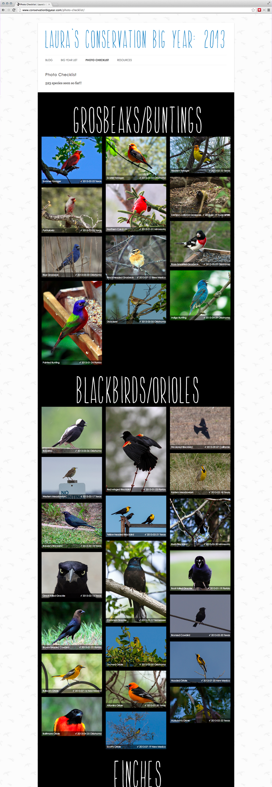
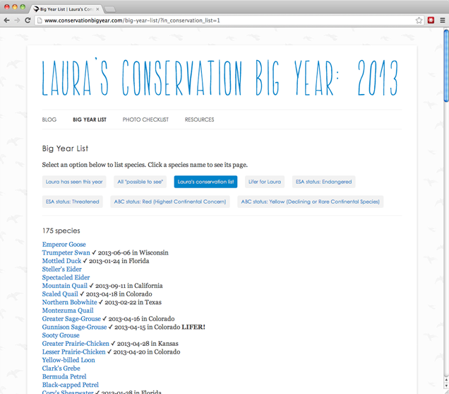
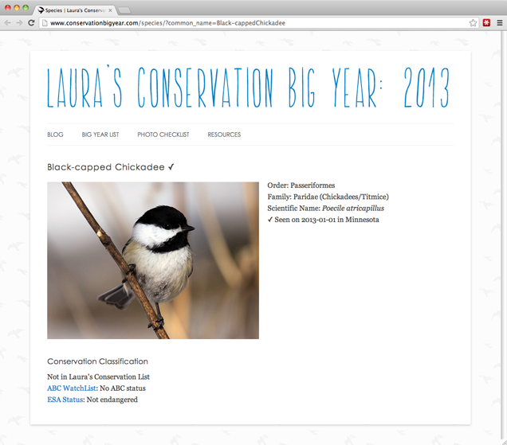
Bacteria Plate Growth History, 2010
PHP/MySQL website to visualize the growth history of
bacterial libraries
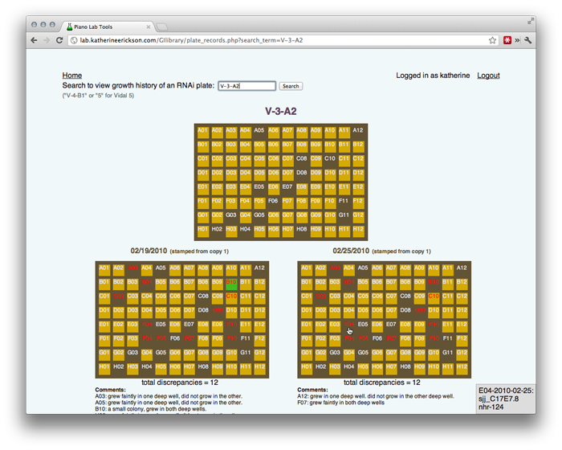

Roadkill Across America, created with
Michael P. Geraci,
2010
PHP/MySQL website to document roadkill observed on a
cross-country bicycle trip
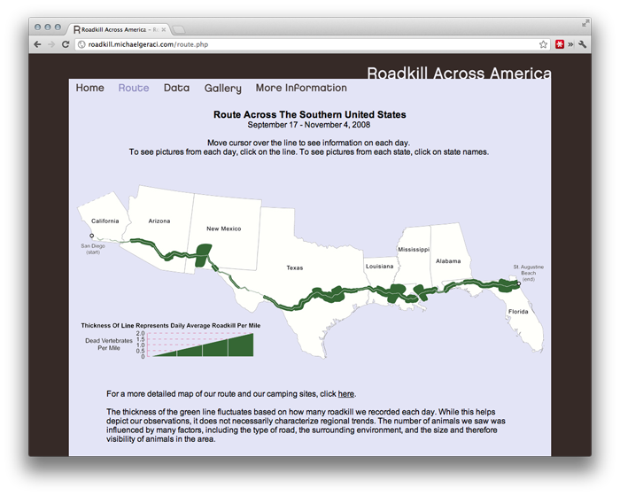
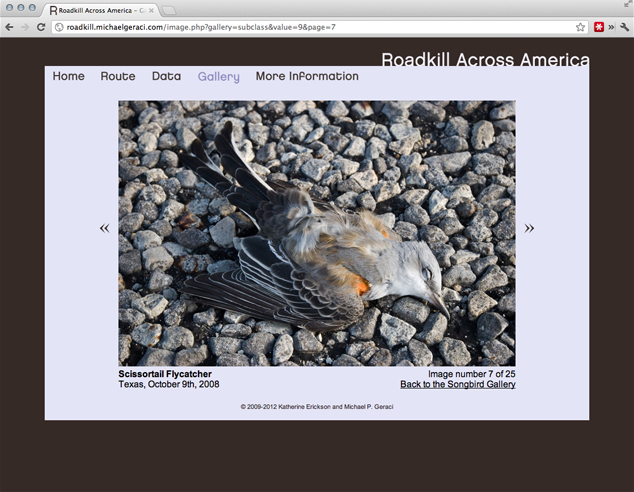
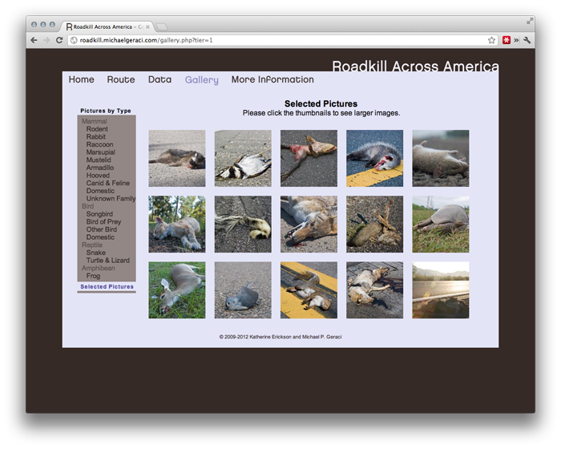